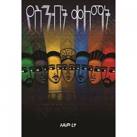
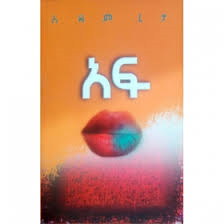
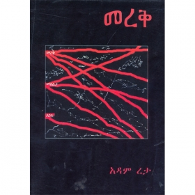
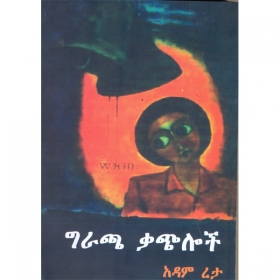

Addis Zeybe is an online magazine for informing current situations of Addis Abeba.
ADAM RETA AND HIS CRITIQUE
As a starter we will begin our story with one of our brilliant writers,
who is well known for his own writing styles and introducing a new approach to
amharic literature.
He is known well from his book of 'GERACHA KACHELOCH', 'MEREQ', and 'YESENBT QELEMAT'.
Adam Reta ia a GENIUS.His social critique is so sharp that you wouldn't believe the man doesn't live in Ethiopia.
Aff- is his newset marvel- where ideas of being true to ourselves, our social pretensions, our ability to exist lying to all others.
and ourselves is explored throughcharacters who'd groen up together.
Adam's technique of narrating from multiple angles will not allow the reader to judge but to understand the situations in detail.
This form of writing is called 'HITSENAWINET'. We will mention about this literature style in the future.Please enjoy the interview takes from sheger 102.1
from Qidame Chewata.




Interview of Adam Reta with Meaza Birru on Sheger radio
Adam Reta's technique of narrating from multiple angles is also seen in Yesenbt Qelemat where over 900 pages is written around a particular event which makes
it very unique and surprising because a whole page revolving around a simple event.
My short writing here, however, does a major de-service to Adam Reta’s literary prowess.
In all honesty, I only meant to share the following quote from his book Af. So I’ll share and stop.
«ማንም ሳያየው የአለቃውን እግር ይስማል፡፡…ከዛ ስኮላርሺፕ ያገኛል፡፡ ከዛ ታድለሃል ይባላል፡፡ አሪፍ ነህም ይባላል፡፡ ከዛ ሰክሰስፉል ይባላል፡፡ ከዛ ቴክኖክራት ይባላል፡፡ ከዛ መአት መአት ጥሩ ጥሩ ነገር ይባላል፡፡ ዋናው መባል ነው፡፡»
አዳም ረታ፤ አፍ 122
(The phrase «ዋናው መባል ነው» hopefully serves as a call for self-reflection.)